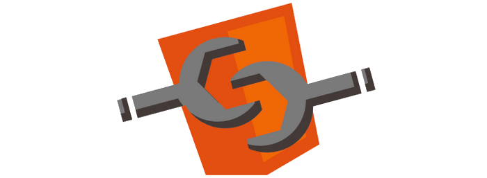

Web Components
by Fabian Kaupp
Agenda:
- Was sind Web Components?
- Warum gibt es Web Components? Wofür sind sie gut?
- Wie funktionieren sie?
- Beispiel
Was sind Web Components?

Code:
<google-map latitude="50" longitude="9"></google-map>Welchen Nutzen / Welche Vorteile bringen Web Components?
Vorteile auf einen Blick:
- Einheitlichkeit
- Einfache Benutzbarkeit
- Möglichkeit der Wiederverwendung
- Kombinierbarkeit
- Kapselung des inneren Aufbaus (HTML, CSS, JS)
Funktionsweise der Web Components
Bestandteile:
- Custom Elements
- Templates
- Shadow DOM
- HTML Imports
Ein eigenes HTML-Tag erstellen:
<document.registerElement("mein-tag");>Weiterführende Deklaration durch:
- Callback-Methoden
- Prototypen
Funktionsweise der Web Components
Bestandteile:
- Custom Elements
- Templates
- Shadow DOM
- HTML Imports
HTML's new Template tag
Template used: 0
Funktionsweise der Web Components
Bestandteile:
- Custom Elements
- Templates
- Shadow DOM
- HTML Imports
Einfügen einer Shadow-Root:
var shadowRoot = myElement.createShadowRoot();
shadowRoot.appendChild(standardHTMLTag);Funktionsweise der Web Components
Bestandteile:
- Custom Elements
- Templates
- Shadow DOM
- HTML Imports
HTML-Dokumente einfügen:
<link rel="import" href="/imports/document.html">Beispiel für Custom Element und Shadow DOM
Weiterführende Quellen:
- Custom Elements
- Templates
- Shadow DOM
- Imports
- Golem
- Peter Kroener
- selfhtml.blog/
- HTML5Rocks:
- Deutschsprachige Einführungen: